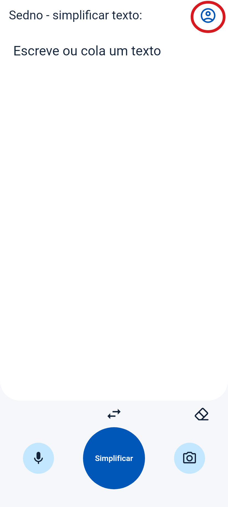
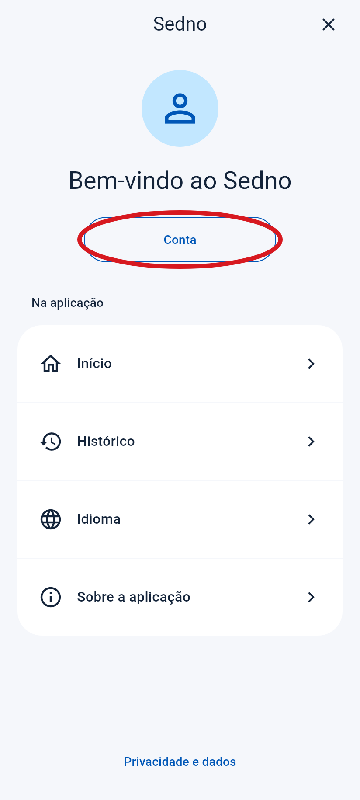
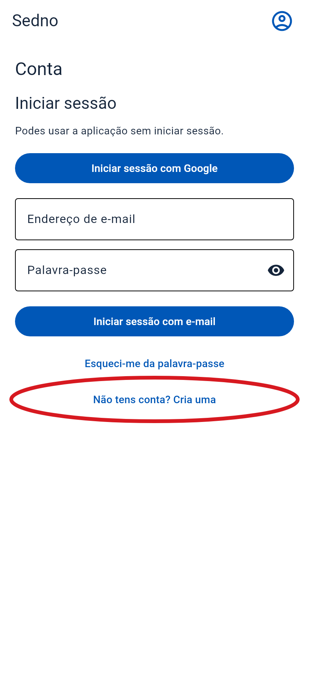
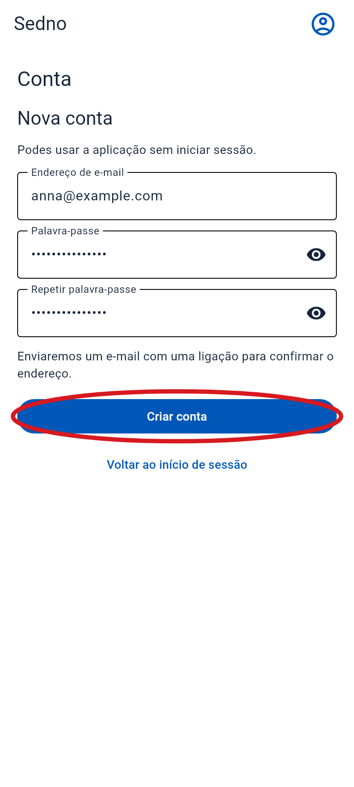
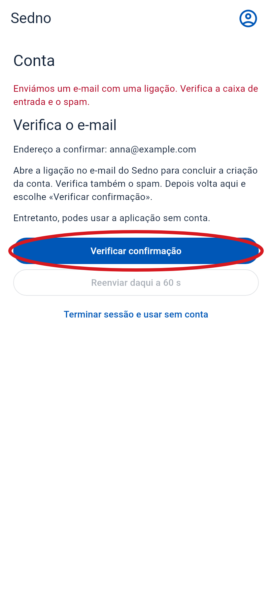
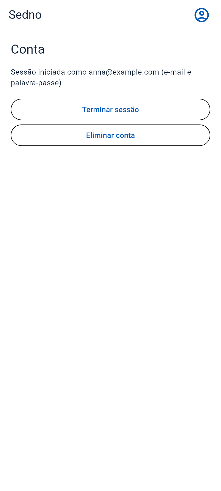

Como criar uma conta
Abre o Sedno no teu telemóvel. Segue estes passos por ordem.
O círculo vermelho mostra onde tocar. Estes ecrãs são da aplicação. O e-mail é um exemplo.
-
1 Abre o menu
Toca no ícone da pessoa no canto superior direito.
Toca aqui

-
2 Escolhe «Conta»
Toca no botão dentro do círculo vermelho.
Toca aqui

-
3 Escolhe criar uma conta
Toca em «Não tens conta? Cria uma». Se não vires o botão, desliza para cima.
Toca aqui

-
4 Escreve o e-mail e a palavra-passe
- Escreve o teu endereço de e-mail.
- Escolhe uma palavra-passe com pelo menos 6 caracteres.
- Escreve a mesma palavra-passe outra vez no campo abaixo.
- Toca em «Criar conta».

-
5 Abre o teu e-mail
Procura a mensagem do Sedno. Vê também a pasta Spam. Abre a mensagem e toca na ligação para confirmar o teu e-mail.
Toca aqui
E-mail de exemplo
Sedno
Confirma o teu endereço de e-mail no Sedno.
Confirmar e-mail -
6 Volta ao Sedno
Abre o Sedno outra vez. Se ainda vires este ecrã, toca em «Verificar confirmação».
Toca aqui

-
7 Já está!
Vês o teu endereço de e-mail. A tua conta está pronta.
